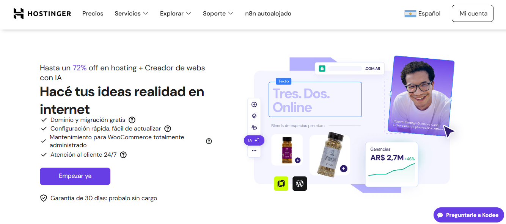
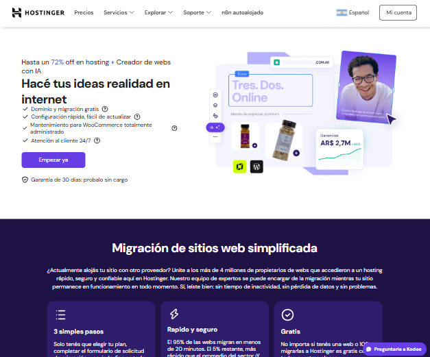
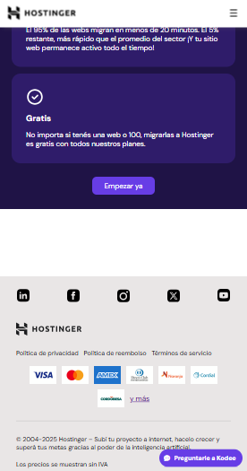

Recreación de varias secciones de la página principal de Hostinger con el objetivo de practicar maquetación profesional utilizando HTML y CSS moderno.
Este proyecto consiste en la recreación de diferentes secciones de la página principal de Hostinger utilizando únicamente HTML y CSS. El objetivo principal fue practicar la construcción de layouts modernos, alineación de elementos, tipografía, spacing y diseño responsive.
El desarrollo se centró en replicar la estructura visual de la página original, aplicando buenas prácticas de maquetación y organización del código frontend.
Recreación del encabezado principal con título destacado, botones de acción y layout alineado.
Bloques de contenido organizados utilizando Flexbox para mantener una estructura limpia y adaptable.
Adaptación de los elementos para diferentes tamaños de pantalla utilizando media queries.
Uso de Flexbox y organización de contenedores para lograr una estructura similar a la página original.


